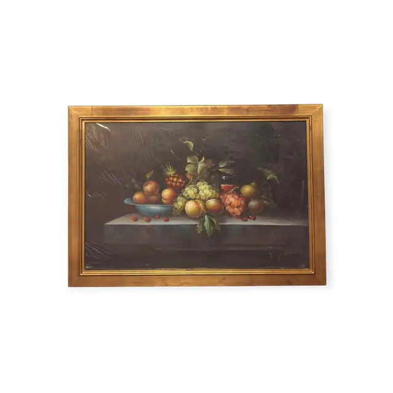
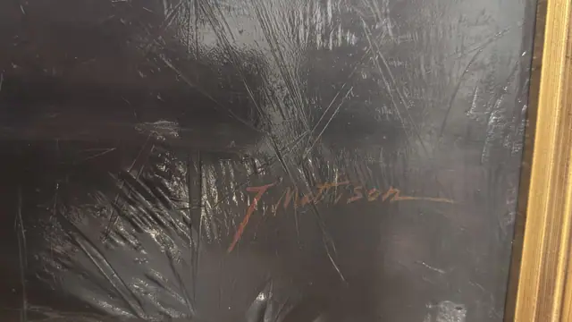
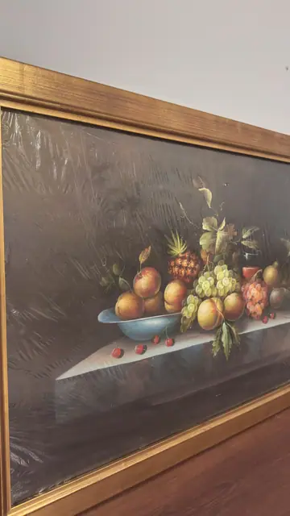
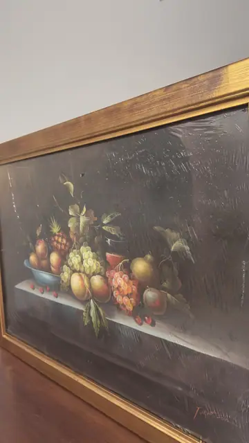

Paintings & Prints
Old Master Style Still Life with Pineapple, J. Mattison, Signed, Framed
J. Mattison · late 20th century
Price Upon Request




About the Item
J. Mattison. A generous heap of fruit is piled on a pale stone ledge against a deep, almost black-brown ground: a small pineapple at the centre, bunches of pale green and dusky red grapes with their vine leaves, ripe peaches, two yellow-green pears and a scatter of wild strawberries in front. A shallow duck-egg blue bowl holds more peaches at the left. The palette is the classic Dutch-revival one - warm amber, russet and green lifted out of a dark chiaroscuro background - and the paint is smooth and blended with glossy highlights on each fruit. Medium: oil on canvas. Signed lower right of the canvas, in red-brown paint, reading "J. Mattison". Inscribed on the reverse or mount: J. Mattison (painted signature, lower right). Condition: The painting is wrapped in clear plastic film, which creases and reflects across the surface in every shot and hides fine condition detail. No tears, punctures or obvious losses visible; no craquelure detectable through the film.
Details
- Creator:
- J. Mattison
- Creation Year:
- late 20th century
- Dimensions:
- Height: 28.75 in (73.03 cm)
Width: 40.5 in (102.87 cm)
outside of frame - Medium:
- oil on canvas
- Period:
- 20Th
- Condition:
- Offered in the condition shown in the photographs.
- Reference Number:
- VO-115
- Documentation:
- no certificate photographed
- Gallery Location:
- J. Mattison (painted signature, lower right)